Universidad Nacional Autónoma de México
Facultad de Ingeniería
Universidad Nacional Autónoma de México
Facultad de Ingeniería
Universidad Nacional Autónoma de México
Facultad de Ingeniería
Universidad Nacional Autónoma de México
Facultad de Ingeniería
Historia, misión, servicios e instrumental disponible.
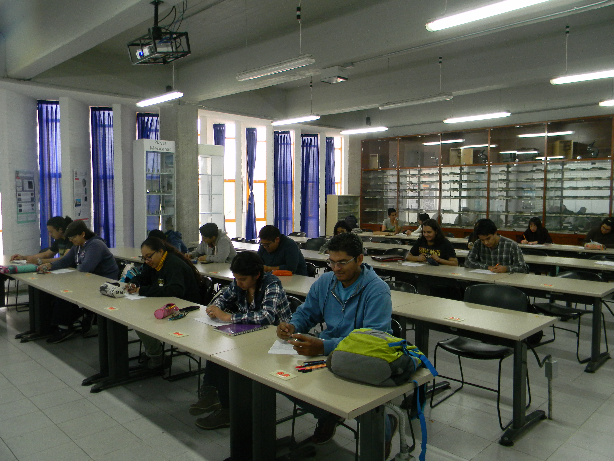
El Laboratorio de Petrología forma parte de la Facultad de Ingeniería y brinda apoyo a la docencia e investigación mediante el análisis de rocas, minerales y secciones delgadas.
A lo largo de su trayectoria ha desarrollado colecciones didácticas, instrumental especializado y recursos para la formación de estudiantes.
Proporcionar infraestructura especializada para apoyar las actividades académicas y científicas relacionadas con la Petrología.
Consolidarse como un laboratorio de referencia nacional en apoyo a la enseñanza, investigación y preservación de colecciones geológicas.
Observación macroscópica y microscópica de muestras.
Apoyo a cursos y prácticas de laboratorio.
Apoyo a proyectos académicos y de investigación.
Detalle histórico del equipo óptico, fotográfico y de cómputo distribuido en las instalaciones del laboratorio.
| Descripción | Observaciones | Imagen |
|---|---|---|
| LABORATORIO cuenta con un microscopio petrográfico marca Nikon con Software Enterprise Omnimet Beuhler de 1998, un microscopio petrográfico marca Leica y uno Carl Zeiss Standard 25. | El microscopio Nikon, se encuentra conectado a una cámara digital que envia las imágenes al monitor y procesador. |
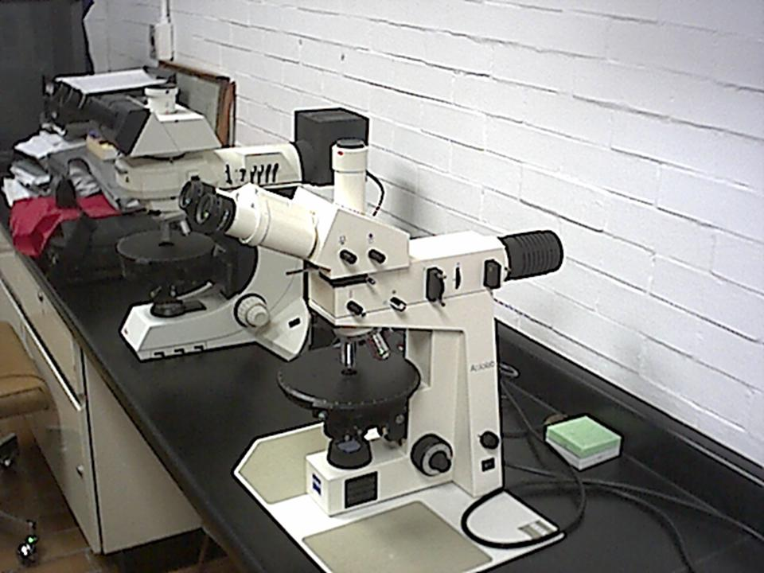 |
| SALÓN 114-A Cuenta con 16 microscopios petrográficos marca Carl Zeiss, modelos K-7 Pol y 9 microscopios marca Carl Zeiss modelo Standard 25. | El microscopio Standard 25 se encuentra conectado a una cámara digital y a su vez a un monitor a color. |
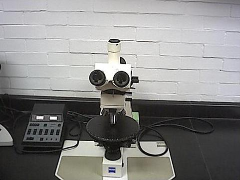 |
| SALÓN 114-B 14 microscopios petrográficos marca Leitz Wetzlar, modelo Laborlux II Pol y 3 microscopios petrográficos marca Leitz, modelo SM LUX Pol. |
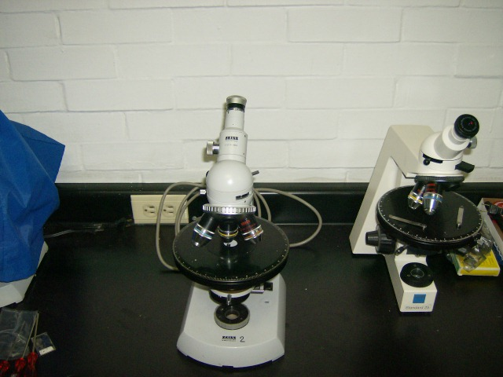 |
| Descripción | Imagen |
|---|---|
| Cámara digital Sony CCD, adaptable a microscopio binocular. |
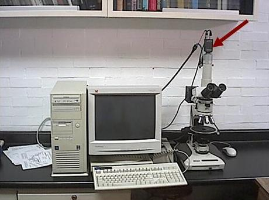 |
| Cámara digital Sony CCD-IRIS, adaptable a microscopio monocular y utilizada como monitor de discusión. |
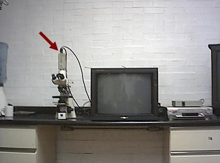 |
| Adaptador de cámara Sony CMA-D2. |
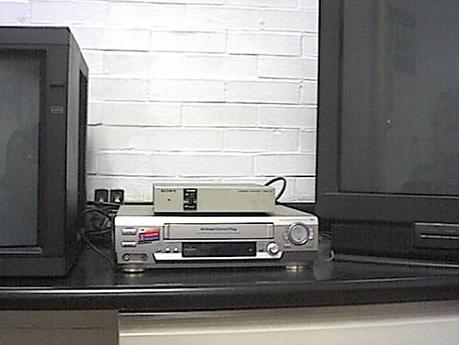 |
| Descripción | Observaciones | Imagen |
|---|---|---|
| Videocasetera VHS. |

|
|
| Videoproyector SONY (DATA Projector) Modelo No. VPL-CS5, Serie No. 24878. |
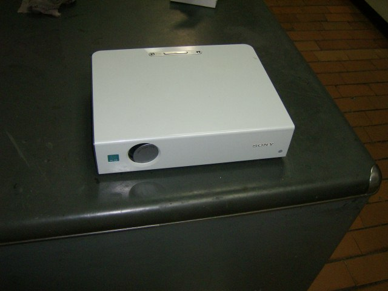 |
|
| Contador digital de puntos. |
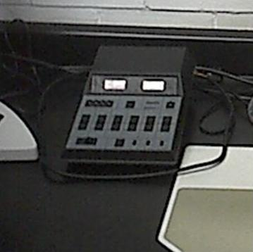 |
|
| Dos equipos de cómputo Intel inside Pentium. | Uno equipo se encuentra conectado a un monitor con usos de datos del laboratorio 114. El otro CPU se encuentra conectado al monitor View sonic que a su vez contiene el software del Analizador de imágenes. |
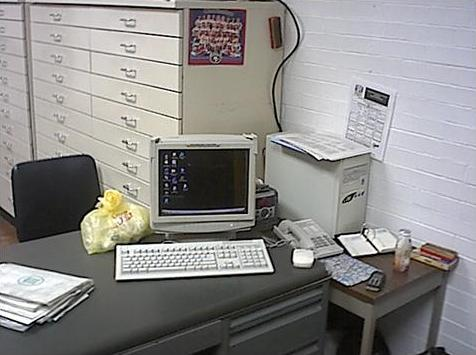 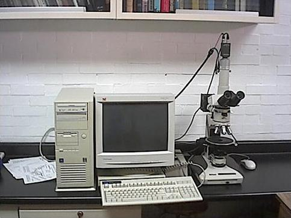 |
| Proyector de acetatos ELMO. |
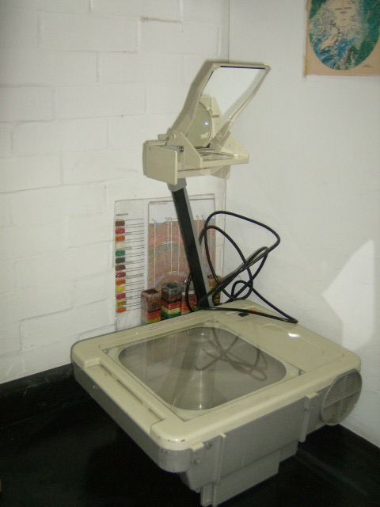 |
|
| Monitor SONY 20" | Monitor de discusión. |
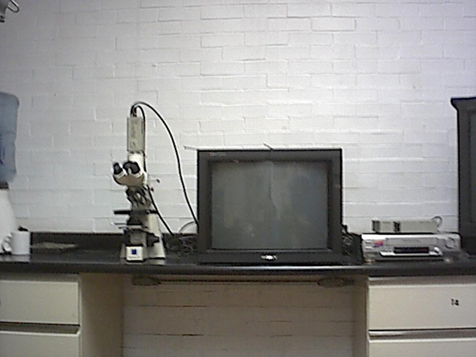 |
| Televisor SONY 24" |
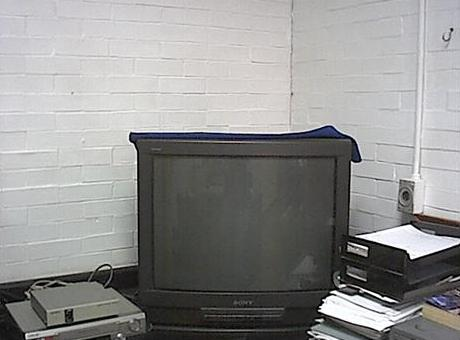 |
Para el inventario actual y su estado operativo, consulta la sección Equipo.